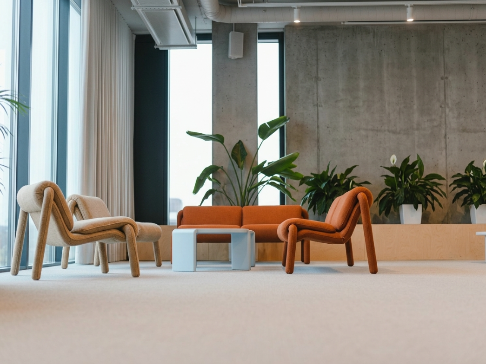
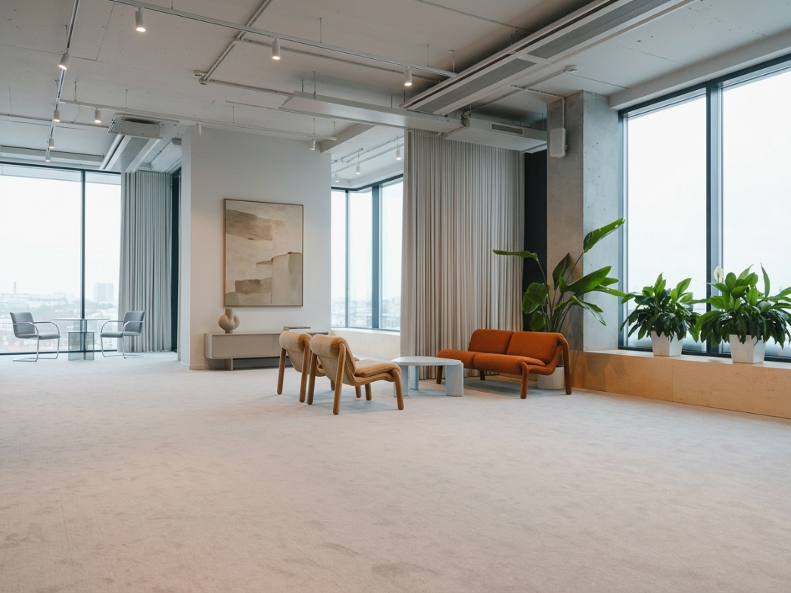

洛杉磯華僑文教服務中心·第二教室
空間介紹
本空間打破傳統教室的生硬框架，以工業風清水混凝土牆搭配溫潤木質調設計，營造出既現代洗練又不失溫度的美學氛圍。室內擁有大面落地窗，引進充足的自然採光，並精心配置高質感的莫蘭迪橘與燕麥色現代沙發椅、造型茶几，搭配綠意盎然的闊葉植栽，營造出富有包容感且能放鬆交流的舒適環境，讓每位與會者都能在最具靈感的氛圍下互動。
第二教室具備高度靈活的空間配置特性，能完美契合民眾多元的場地租借需求：
- 各類課程： 適合舉辦小型文化沙龍、藝術手作、專題講座或互動型教學活動。
- 商務會議： 提供高隱私且放鬆的氛圍，適合進行團隊腦力激盪、商務洽談或中小型會議。
- 社群聚會： 溫馨舒適的沙發區，極適合辦理僑團聯誼、青年交流、讀書會或溫暖的私密談話。
空間地點
9443 Telstar Ave, El Monte, CA 91731 美國
洛杉磯華僑文教服務中心
使用規範
為維護全球海外文教中心之場地品質與使用秩序，請借用民眾與團體務必詳閱並配合以下規定：
非營利與中立原則
本中心屬非營利機構，場地設施僅供非營利性之文教及聯誼活動使用。嚴禁從事販賣、交易等任何商業行為，且辦理之活動不得涉及政黨、選舉造勢或其他政治與宗教活動。
環境布置與復原
申請單位須自行布置場地。為維護政府行政中立立場，現有設施與既有布置（如國旗、元首玉照等）一律不得任意移動、變更或掩蓋。活動結束時，請務必將全部器材撤離、確實完成垃圾分類並帶走，將場地恢復原狀。
出借時間與超時規範
請嚴格遵守各中心核准之出借時段，並準時結束。若有活動當日提早入場佈置或逾期超時之情形，將依各中心規範加計場地維護費。
費用與保證金繳納
經中心核准借用後，申請人最遲須於活動前 3 日（或依各中心規定時間）前繳清場地清潔維護費與保證金。活動結束後經中心同仁確認場地回復原狀且無污損，將全數退還保證金；如有毀損或污損，費用將自保證金中扣抵或由借用單位負賠償責任。
中心優先使用權
本中心對於場地保有優先使用權。場地核准出借後如因必要情形，中心得通知申請單位更改使用日期及時間，申請單位不得異議。若因此無法配合而取消，中心將無息全數退還已繳費用。
免責與意外保險
借用單位必須自行購買各項意外保險，並確實遵守場地容納人數限制。對於使用期間所發生之任何意外、傷亡、偷竊或疾病等情形，均由借用單位自行負責處理，本中心概不負任何賠償與法律責任。